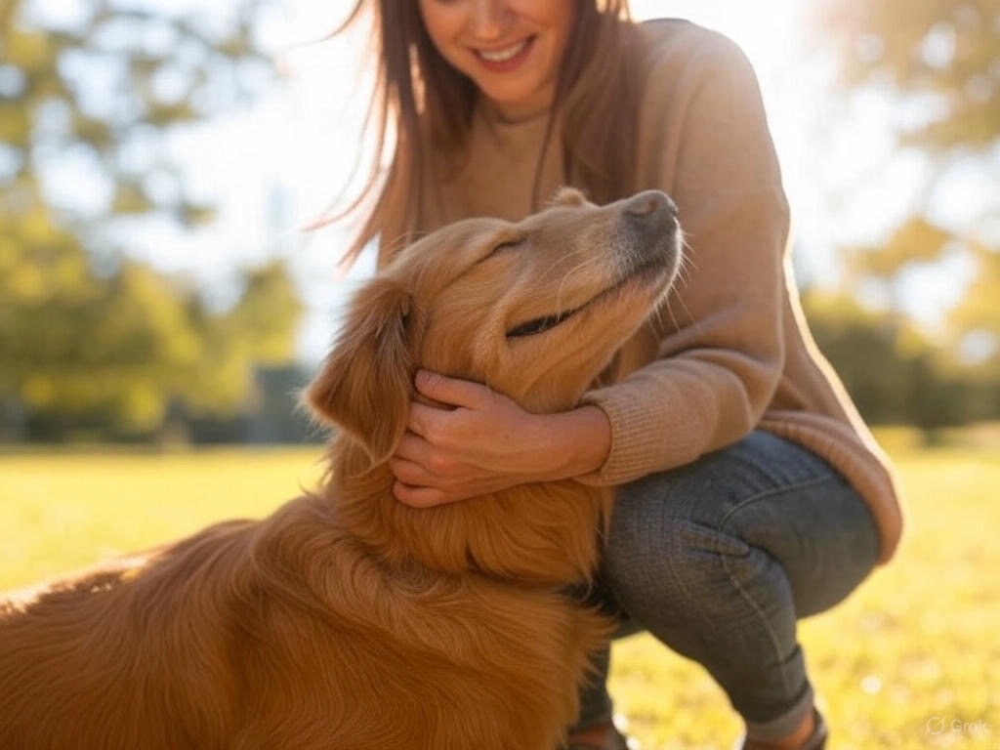
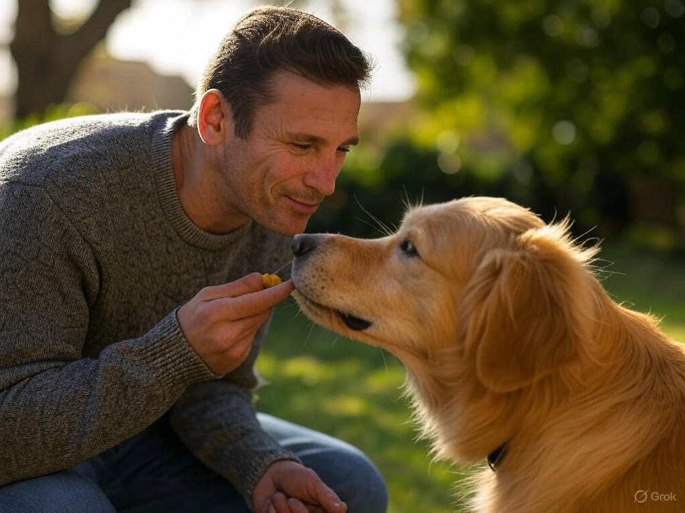
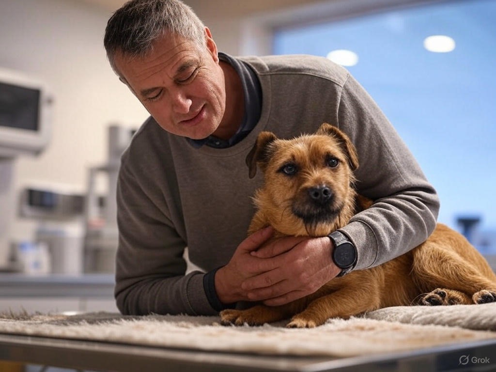
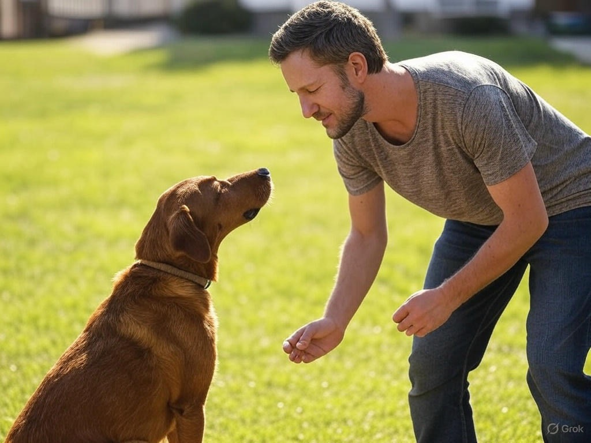

نصائح لتربية الكلاب

الكبار
رعاية الكلاب البالغة
- وفر تمارين يومية كافية
- حافظ على نظام غذائي متوازن
- استمر في تدريبات الطاعة الأساسية
- راجع الطبيب البيطري بانتظام

التغذية
أسس التغذية السليمة
- اختر طعامًا مناسبًا للعمر والسلالة
- تجنب إعطاء بقايا طعام البشر
- وفر ماء نظيفًا طوال اليوم
- التزم بكميات الطعام الموصى بها

الصحة
الرعاية الصحية الوقائية
- الالتزام بجدول التطعيمات الدوري
- العناية بالأسنان والأذنين بانتظام
- تمشيط الفراء أسبوعيًا
- مراقبة أي تغيرات في السلوك

السلوك
ضبط السلوكيات غير المرغوبة
- استخدم التصحيح الهادئ والمباشر
- كافئ السلوك الجيد فورًا
- تجنب العقاب الجسدي
- استشر مدربًا متخصصًا عند الحاجة